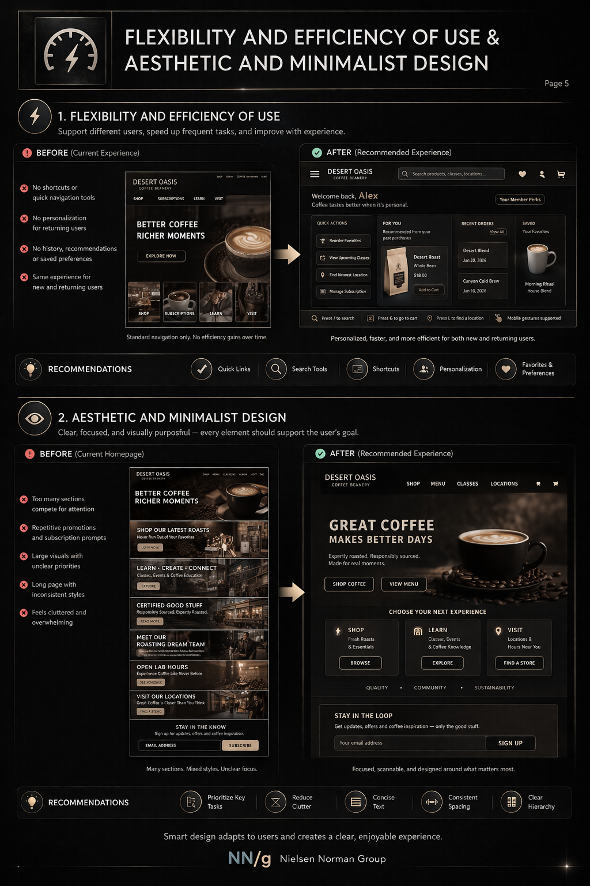
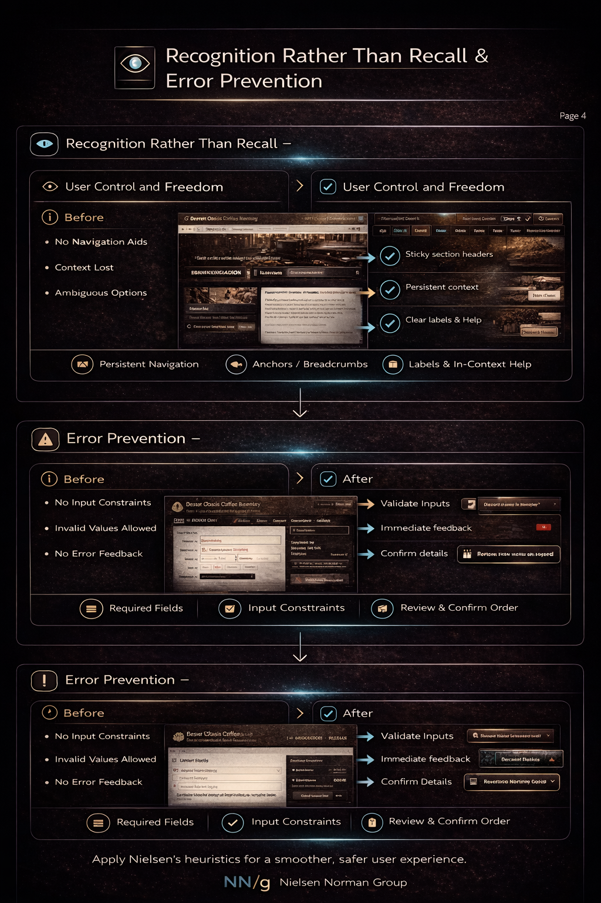

Making of the Portfolio
Building the System
This project documents how the portfolio was developed as a system rather than a collection of disconnected pages.
The goal was to create a structure that could hold research, product design, strategy, writing, and experiential work in one coherent framework while guiding how the work is understood.
Instead of using invented visuals, this case study uses the actual portfolio pages and the actual process artifacts that informed the system.
Why the system was needed
The portfolio had to explain how different types of work relate instead of leaving that burden to the viewer.
How the pages were structured
Each page has a role inside a larger system: orientation, depth, evidence, strategy, and translation.
What evidence supports it
Research methods, affinity diagramming, ideation, micro-interactions, and heuristic analysis all feed into the portfolio logic.
What the portfolio proves
That structure, hierarchy, and interpretation can be deliberately designed across multiple disciplines.
- Research, design, writing, and strategy can look disconnected when shown side by side
- Without hierarchy, breadth can be mistaken for inconsistency
- Visual polish alone does not explain how the work fits together
- The viewer should not have to build the interpretive model alone
The portfolio needed to function as a navigable argument. It had to orient the viewer, separate disciplines clearly, and still show that they belong to one larger way of thinking.
That meant building a page system where each section had a role and where the portfolio itself became evidence of how structure affects understanding.
The portfolio was designed to explain the work, not just display it.
Recruiter
Needs immediate clarity on role fit, level, and range without reading every page deeply.
Response: strong first-page orientation, visible page logic, and clear top-level distinctions.
Design or hiring lead
Needs evidence of reasoning, decision-making, and whether the portfolio reflects actual systems thinking.
Response: case-study framing, real process artifacts, and structural continuity across pages.
Interdisciplinary reviewer
Needs to understand how writing, research, strategy, and design belong together rather than appearing scattered.
Response: one shared shell, discipline-specific pages, and real evidence of translation from research to interface.
Home
The home page orients the viewer immediately and establishes the portfolio as a system rather than a gallery.
About
The about page connects background, disciplines, and methodology without breaking the visual system.
Research
The research page grounds the portfolio in evidence, method, and analytical structure.
Strategy
The strategy page shows prioritization, framing, and how decisions are organized into direction.
Writing & Voice
The writing page shows language as a structural design tool rather than a decorative afterthought.
Product Design
The design page presents interface reasoning, interaction choices, and visual hierarchy inside the same shell.
Botanic Elixir
This project extends the system into an experience-led environment, showing how digital and spatial logic connect.

Affinity Diagram
This artifact shows how qualitative findings were grouped into patterns and insights. It supports the portfolio’s emphasis on structure and interpretation.

Crazy 8s
This ideation board shows rapid concept development and how problem framing begins to move toward interface direction.

Micro-interactions
This work shows attention to interaction timing, feedback, and interface behavior beyond static layout alone.

Heuristic Analysis Visual
This visual demonstrates how interface critique was translated into clearer structure and more explicit recommendations.

Heuristic Recommendation Board
This board shows before-and-after reasoning, hierarchy, and recommendation framing — all of which influenced the case-study logic of the portfolio.
Connection to Projects
This document explicitly traces the relationship between research, interface structure, and the evolution toward larger experiential systems.
Interview Data
The interview data shows the raw material behind synthesis and helps demonstrate that the portfolio’s logic is grounded in actual process.
Website Heuristic Analysis
This analysis reflects how critique, grouping, and redesign logic influenced later page structure and project framing.
The source material is rich, but by itself it does not yet explain how all the work belongs together inside a portfolio.
The portfolio translates that material into a legible system: first orientation, then categorized pages, then deeper case-study access.
The change was not just in visuals. It was in how the work was made legible.
- Information architecture
- Content strategy
- Page system design
- Research-to-interface translation
- Cross-project coherence
The result is a portfolio that does more than show work. It explains how the work belongs together, what role each page plays, and how process artifacts translate into interface systems and larger experiential ideas.
That makes the portfolio itself one of the strongest projects in the set, because it demonstrates the same structural thinking it is describing.
The portfolio itself becomes evidence of the method.